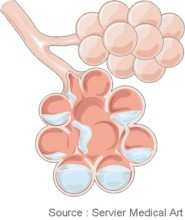

Bienvenue Sur Medical Education
L'œdeme aigu du poumon
DefinitionL'œdeme aigu du poumon (O.A.P.) est une inondation brutale des alveoles pulmonaires et du tissu pulmonaire interstitiel par trans-sudation du plasma provenant d'une augmentation de la pression capillaire pulmonaire. Cette augmentation de la pression capillaire pulmonaire est due a une incapacite du cœur a pomper efficacement ce qui provoque donc une baisse du debit cardiaque et une gene du retour veineux pulmonaire.
Il s'agit de la forme aigue de l'insuffisance cardiaque gauche. L'œdeme aigu du poumon est une urgence medicale. Le pronostic vital du patient est en jeu en l'absence de traitement, il peut deceder par asphyxie.
Physiopathologie
La defaillance brutale du cœur gauche entraene une baisse du debit cardiaque et une gene du retour veineux pulmonaire. Une forte elevation des pressions en amont se cree et la serosite plasmique inonde les alveoles pulmonaires.
Les echanges gazeux se font mal, on observe alors une hypoxie et une hypocapnie. Le patient se met a hyperventiler pour compenser le manque d'oxygene.
|  |
|
Œdeme pulmonaire |
Etiologies
Œdeme aigu du poumon cardiogenique
C'est le cas le plus frequent, il est lie a une alteration qui se situe au niveau du cœur gauche :
- Insuffisance cardiaque gauche avec un trouble de la fonction systolique.
- Hypertension arterielle.
- Valvulopathie qui produit un ecoulement sanguin perturbe : retrecissement aortique, insuffisance mitrale.
- Lesion traumatique liee a des contusions pulmonaires, une pneumopathie a type infectieuse ou toxique ou par inhalation.
Facteurs declenchants
- Non suivi d'un regime desode.
- Interruption, erreur, inadequation d'un traitement.
- Trouble du rythme cardiaque : hypertension arterielle.
- Infarctus du myocarde en evolution.
- Surinfection bronchique.
- Apport liquidien excessif.
Signes cliniques
- Debut brutal et souvent nocturne qui reveil le patient dans un tableau d'asphyxie aigu.
- Suffocation, cyanose, sueur, angoisse, torpeur.
- Dyspnee a type de polypnee > 30/min.
- Sensation d'oppression thoracique.
- Orthopnee : le patient ne supporte pas la position allongee, il est assis au bord du lit.
- Toux seche puis expectoration abondante.
- Tachycardie.
- Reles crepitants : bruit de pas dans la neige.
Examens complementaires
- Bilan sanguin : ionogramme (sodium potassium), uree, creatinine, enzyme cardiaque (C.P.K., troponine), N.F.S. pour depister une anemie, bilan de coagulation.
- Gaz du sang arteriel : hypoxie et hypocapnie.
- Echodoppler : origine cardiogenique.
- E.C.G.
- Radiographie pulmonaire : recherche d'un epanchement unilateral ou bilateral.
- Bilan urinaire.
Soins infirmiers
Prise en charge
- Position assise ou demi-assise.
- Oxygenotherapie en continu a 6-9 l/min.
- Prendre la tension arterielle et la frequence cardiaque, amplitude et frequence respiratoire, saturation en oxygene.
- Mettre le patient sous monitoring et effectuer une electrocardiographie (ECG).
- Pose d'une voie d'abord de gros calibre.
- Prelevement sanguin par ponction veineuse : enzyme cardiaque (CPK, troponine), ionogramme, hemogramme, hemostase.
- Prelevement sanguin par ponction arterielle pour gazometrie.
- Radiographie pulmonaire.
- Reduire la pression capillaire pulmonaire en diminuant le volume sanguin : faire uriner, restriction hydrique, vasodilatation veineuse.
- Preparation pour intubation et ventilation assiste du a l'hypocapnie.
- Position assise bien respecter, jambe surelever.
- Rythme respiratoire et sa frequence, pression arterielle, pouls, E.C.G., monitoring.
- La voie d'abord veineuse : reflux, point de ponction.
- Disparition des oedemes du mollet.
- Respect de la restriction hydrique.
- Rafraechir la personne.
- Prevention d'escarre.
- Surveiller la diurese : garder les urines ou sonde urinaire.
- Surveiller le facies, tegument, coloration de la peau : cyanose, marbrure.
- Sonde nasal : oxygenation
- Efficacite du traitement.
Traitements
- Diuretique en intraveineuse.
- Derives nitres (trinitrine) en pousse-seringue electrique.
- Antiarythmique.
- Anticoagulant en seringue auto-pousseuse.
- Oxygenottherapie.
Voir aussi :